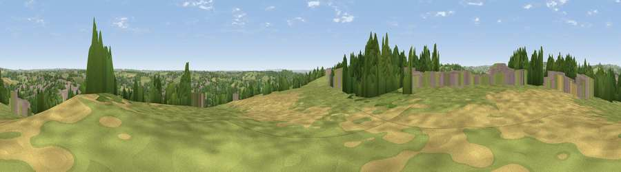

Viewpoint near Openwoodgate
#14832 in England · top 10% of its area beats it · near OpenwoodgateWhere it is
The exact computed spot (SK 36325 46625). Click the marker for map links.
The view, rendered

A 360° render of this exact spot computed from the terrain model, tree cover and land cover — summer colours, afternoon light, calibrated against photographs of famous viewpoints. Real trees, hedges and buildings will differ in detail.
The panorama
Grey silhouette: terrain skyline in each direction (720 bearings, Earth curvature and refraction included). Dashed green: skyline with trees (+15 m) and buildings (+8 m) as obstacles. Blue strip: how far the ground is visible on each bearing.
Where the view opens
Wedge length = distance to the farthest visible ground on that bearing (vegetation-aware). Rings at 10, 25 and 50 km.
What fills the view
49% grassland · 23% woodland · 16% built-up · 13% cropland
Angular shares of the visible panorama (visual magnitude), not map area. Landscape diversity 0.54 (0–1 Shannon).
Key numbers
More beautiful places nearby
The staircase of upgrades: each row has a higher view potential than everything closer. Driving times are estimates from straight-line distance, calibrated against real road routing — check an actual route before setting out.
| Place | Direction | Drive | Score |
|---|---|---|---|
| Viewpoint near Boothgate | NNW · 3 km | ~6 min | 59.4 |
| Viewpoint near Milford | WSW · 3 km | ~6 min | 62.2 |
| Firestone Hill | W · 3 km | ~7 min | 65.8 |
| Viewpoint near Hazelwood | WSW · 3 km | ~7 min | 66.3 |
| The Tors | NNW · 7 km | ~15 min | 68.9 |
| Alport Height | NW · 8 km | ~16 min | 73.9 |
| Tissington Hill | WNW · 22 km | ~37 min | 75.5 |
| Viewpoint near Stanton under Bardon | SSE · 35 km | ~53 min | 76.0 |
53.01570, -1.45999 · source: screening · position refined by local search. Computed location — check access rights before visiting.